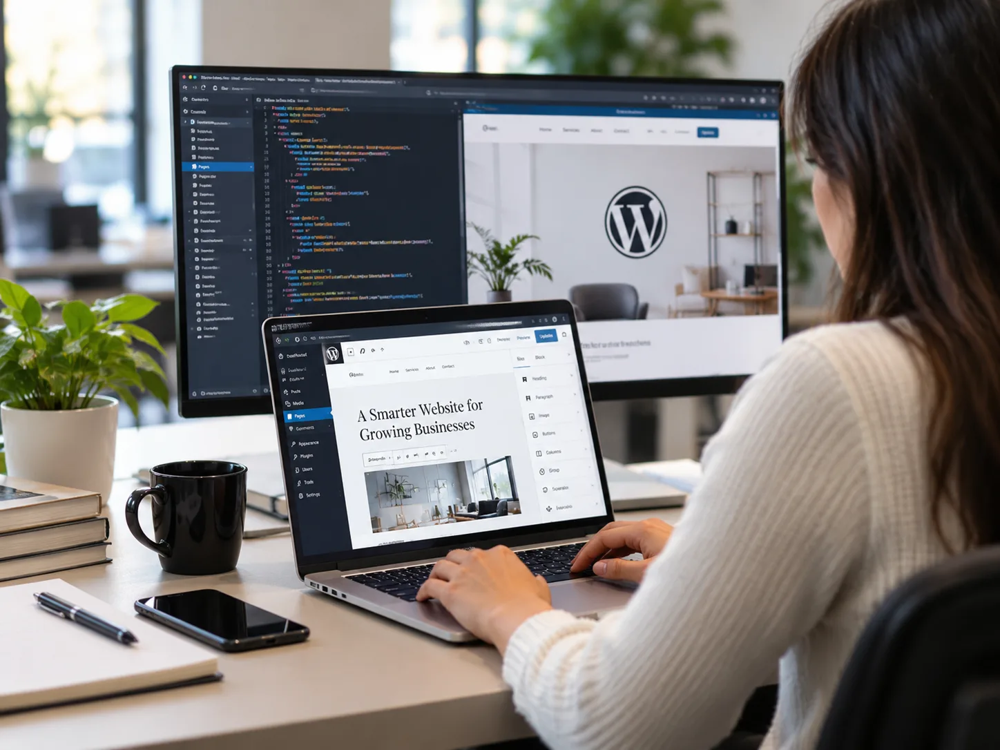
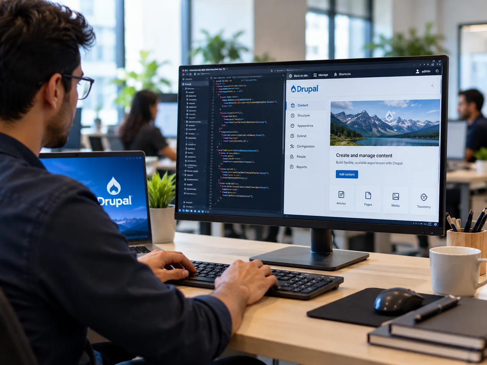
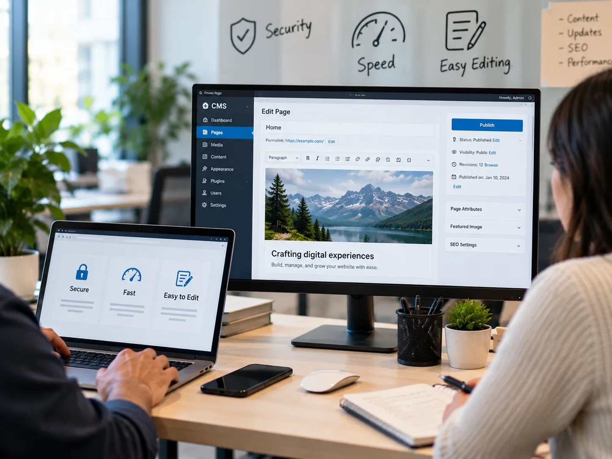

Core Platforms
The CMS platforms and versions we build on, selected to match your content and editorial needs.
CMS Development
Cypherox provides CMS development services on WordPress and Drupal, from corporate websites and content hubs to multilingual and multi-site platforms. We build editor-friendly content structures, secure custom code, and integrations, so your team can publish and update pages independently.
Explore modular AI architectures tailored to your business:
What Cypherox Offers
Both platforms are open source and widely supported, but they suit different needs: WordPress for fast, flexible marketing sites, and Drupal for structured content, complex permissions, and large multilingual estates.
Custom WordPress themes, Gutenberg blocks, and plugins for marketing sites and content hubs your team can edit without touching code.
Drupal platforms for organizations with structured content, detailed editorial workflows, multiple languages, and strict access requirements across one or many sites.
Many WordPress sites slow down and become fragile as plugins and page builders pile up. We build lightweight custom themes with reusable Gutenberg blocks, replace unnecessary plugins with clean custom code, and set up caching, security hardening, and update routines. Editors get flexible page layouts without breaking the design.

Universities, public bodies, and large companies often manage thousands of pages across languages, departments, and permission levels. Drupal handles this through structured content types, granular roles, and built-in multilingual support. We build custom modules, editorial workflows, and multi-site setups, and move Drupal 7 sites that are past end of life to current versions.

Open-source CMS platforms are common targets for attacks and quickly slow down when neglected. These four standards keep every site we build secure, fast, and simple to manage.

How Cypherox Builds CMS Sites
A CMS project succeeds or fails on its content structure. We plan that first, then build, migrate, and train your editors before handing over the site.
We review your existing content, editors, and requirements, then recommend WordPress or Drupal with clear reasons.
We define content types, fields, taxonomies, and roles so pages stay consistent as the site grows.
We build the theme, custom blocks or modules, and integrations with your CRM, search, and analytics tools.
We migrate content and media, set up redirects, and test templates, forms, and permissions across devices.
We train your editors, document the site, and provide updates, security monitoring, and improvements after launch.
CMS Technology
We choose plugins, modules, and hosting carefully, preferring fewer, well-maintained components that keep the site secure and easy to update.
The CMS platforms and versions we build on, selected to match your content and editorial needs.
Plugins and modules for multilingual content, forms, SEO, and editorial workflows.
Theming and front-end tools for traditional and headless CMS websites.
Managed hosting, caching, and monitoring tools that keep sites fast and secure.
CMS Technology
We build on current WordPress and Drupal releases and well-maintained extensions, avoiding abandoned plugins that create security risks later.
Marketing managers, editors, and IT leads on how their websites changed after moving to a well-built CMS.
"Hi, my name is Gabrielle, and I'd like to share my experience working with Cypherox Technologies on one of the mobile apps and websites I built with them. The team members at Cypherox Technologies were attentive, diligent, communicative and very, very bright. I had an amazing experience working with them and I highly recommend."

"I'm Britney and I'm the head of conversion optimization for Acadia, a digital marketing agency. I've had the pleasure of working with the Cypherox team for over two, going on three years now. They're fast, hardworking and really diligent developers. They're really reliable, skilled developers and have been a great partner and a pleasure to work with."

"Hey I'm Brian and I recently worked with Cypherox Technologies who developed an e-commerce platform. For me, working with Cypherox Technologies was truly an excellent experience. I recently collaborated with them to design and develop the custom e-commerce platform from the Groundhog and their expertise was evident from day one."

"Hi, I'm Becke. I've had the pleasure of working with Cypherox Technologies on a recent web development project. It was a custom, heavy CRM and the experience was seamless from start to finish. The product was delivered on time and he went the extra mile to ensure everything was done so that we understood the process. It was just, it was brilliant. It was really, really good service. So yeah, absolutely brilliant; I'd recommend it. Thank you so much. Thank you."

"I would highly recommend working with Cypherox Technologies if you need a custom CRM platform. They always exceed their clients' expectations at every stage of the project. Their team designs and builds fully customized ecommerce platforms from the ground up, approaching every project with remarkable skill and dedication."

"Hi, my name is Gabrielle, and I'd like to share my experience working with Cypherox Technologies on one of the mobile apps and websites I built with them. The team members at Cypherox Technologies were attentive, diligent, communicative and very, very bright. I had an amazing experience working with them and I highly recommend."
"I'm Britney and I'm the head of conversion optimization for Acadia, a digital marketing agency. I've had the pleasure of working with the Cypherox team for over two, going on three years now. They're fast, hardworking and really diligent developers. They're really reliable, skilled developers and have been a great partner and a pleasure to work with."
"Hey I'm Brian and I recently worked with Cypherox Technologies who developed an e-commerce platform. For me, working with Cypherox Technologies was truly an excellent experience. I recently collaborated with them to design and develop the custom e-commerce platform from the Groundhog and their expertise was evident from day one."
"Hi, I'm Becke. I've had the pleasure of working with Cypherox Technologies on a recent web development project. It was a custom, heavy CRM and the experience was seamless from start to finish. The product was delivered on time and he went the extra mile to ensure everything was done so that we understood the process. It was just, it was brilliant. It was really, really good service. So yeah, absolutely brilliant; I'd recommend it. Thank you so much. Thank you."
"I would highly recommend working with Cypherox Technologies if you need a custom CRM platform. They always exceed their clients' expectations at every stage of the project. Their team designs and builds fully customized ecommerce platforms from the ground up, approaching every project with remarkable skill and dedication."
Answers for marketing and IT teams comparing CMS development services, covering WordPress versus Drupal, migration, security, multilingual sites, maintenance, and cost.
Tell us about your content, editors, and languages, and we will recommend the platform that fits. Selling products online too? See our ecommerce development services.
Discuss Your WebsiteWordPress suits marketing sites, blogs, and content hubs where ease of editing and a large plugin ecosystem matter most. Drupal suits large, structured sites with complex permissions, editorial workflows, many languages, or several related websites managed from one codebase.
Yes. We migrate pages, posts, media, users, and metadata from other CMS platforms, map old URLs to new ones with 301 redirects, and check that forms, search, and integrations work before switching traffic to the new site.
Drupal 7 reached end of life in January 2025, so it no longer receives official security updates. We assess your content and custom code, then migrate to current Drupal or, if a simpler platform fits better, to WordPress.
We keep core, themes, plugins, and modules updated, remove unused extensions, enforce strong logins and limited permissions, and set up backups and monitoring. Custom code is reviewed before release, and security updates are applied promptly under a maintenance plan.
Yes. Drupal includes multilingual support in its core, and on WordPress we use established tools such as WPML or Polylang. We set up translation workflows, language switching, and URL structures that search engines handle correctly.
Headless means the CMS manages content while a separate front end, often built in Next.js, displays it. It suits sites that need top performance or share content with apps. For most marketing sites, a well-built traditional theme is simpler and enough.
Yes. We design content structures and blocks around how your editors work, set roles so people see only what they need, and provide training and documentation at handover. Developers are needed only for new features or structural changes.
Cost depends on the platform, number of templates and content types, custom features, integrations, languages, and migration scope. Hosting and premium plugins are separate costs. We provide a scoped estimate after the content audit and platform recommendation.
Start With Your Content
Tell us about your current website, your content, and the people who manage it. We will recommend WordPress or Drupal and outline a build or migration plan.